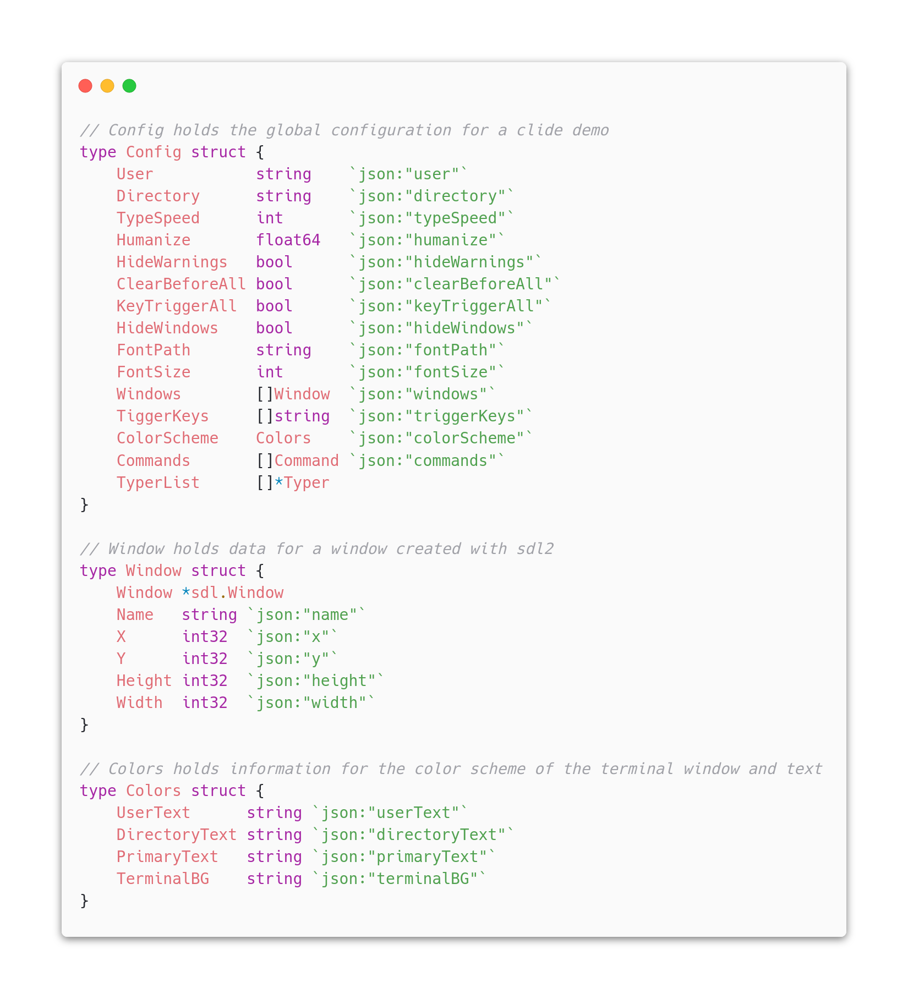
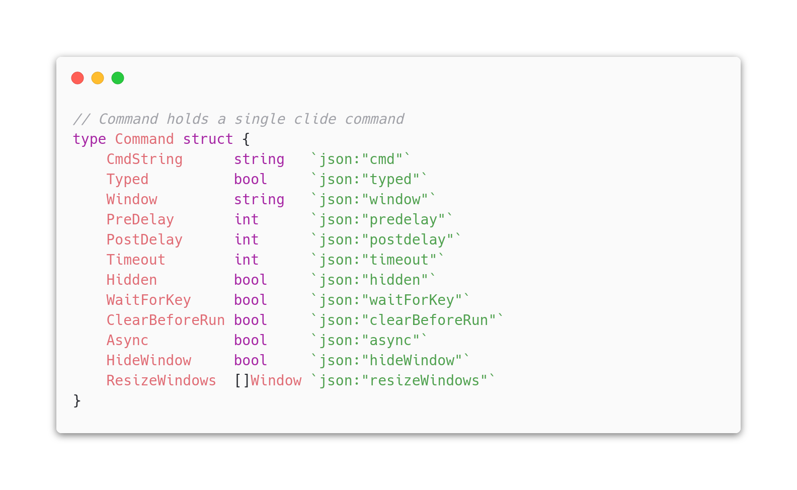

Clide Config/Command Reference
Clide uses a JSON file for running demos. This documents explains what each JSON field does when running a Clide demo.
Example JSON
Global Configuration
user
JSON{}
"user": "demo@clide"Go
cfg.User = "demo@clide"The username that appears in the clide terminal window
directory
JSON{}
"directory": "/"Go
cfg.Directory = "/"The directory that appears in the clide terminal window
typespeed
JSON{}
"typespeed": 100Go
cfg.TypeSpeed = 100The delay before each character is printed to the terminal in milliseconds. When humanize is set, the delay will be randomized based on the humaize ratio for each character. Typespeed is actually a measurement of a timed delay, so a higher typespeed will mean slower typing.
humanize
JSON{}
"humanize": 0.5Go
cfg.Humanize = 0.5The ratio used in randomizing the delay for each character printed into the terminal. This value is expected to be between 0.0 and 1.0. A value of 0.5 would randomize the key delay between +50% and -50%.
hideWarnings
JSON{}
"hideWarnings": falseGo
cfg.HideWarnings = falseSets whether warnings for uninstalled commands will be shown. If set, a warning will be printed before running the demo showing the uninstalled commands. Another warning will also appear during runtime showing that the uninstalled command has been skipped.
clearBeforeAll
JSON{}
"clearBeforeAll": falseGo
cfg.ClearBeforeAll = falseA global setting to clear the terminal window before every command. Setting this to true is identical to setting 'clearBeforeRun' for each command in the demo.
keyTriggerAll
JSON{}
"keyTriggerAll": falseGo
cfg.KeyTriggerAll = falseA global setting to ignore timings and wait for a key press to execute the command print and execute. The key used to trigger the timings must be present in the triggerKeys array for clide to recognize the event. Setting this to true is identical to setting 'waitForKey' for each command in the demo.
fontPath
JSON{}
"fontPath": "assets/UbuntuMono-B.ttf"Go
cfg.FontPath = "assets/UbuntuMono-B.ttf"The file path for the font file you want clide to use when drawing text to all windows.
fontSize
JSON{}
"fontSize": 18Go
cfg.FontSize = 18The size of the font written to all clide windows.
colorScheme
JSON{}
"colorScheme": {"R":255,"G":255,"B":255,"A",255}Go
cfg.ColorScheme = clide.Colors{}The color scheme used for all windows. Customizable fields include user text, directory text, primary text, and window background.
triggerKeys
JSON{}
"triggerKeys": ["space", "right", "a"]Go
cfg.TriggerKeys = [ ]string{"space", "right", "a"}The list of keyboard keys that can be used to trigger the execution or typing/printing of a command. Clide uses go-sdl2 for keyboard event handling. The list of recognized strings representations for keys can be found in the keycodes.go file in the go-sdl2 github repository.
windows
JSON{}
"windows": {"name":"clide","x":0,"y":0,"h":600,"w":800}Go
cfg.Windows = [ ]clide.Window{ }The collection of data representing the size and position of the clide terminal window. Multiple can be specified and each can be targeted using the window's unique name.
commands
JSON{}
"commands": [ { } ]Go
cfg.Commands = [ ]clide.Command{ }Holds the array of command objects to run during the demo. A commands field is required for Clide to run a demo. See the next section of for more information regarding fields used for commands.
Command Configuration
cmd
JSON{}
"cmd": "echo hello world!"Go
cmd.CmdString = "echo hello world!"A string containing the command as you would type it into a terminal.
window
JSON{}
"window": "clide"Go
cmd.Window = "clide"Specifies the window in a multi-window demo to execute the command in. Note that the process is executed in a separate process and the output is sent to the given window.
typed
JSON{}
"typed": falseGo
cmd.Typed = falseDetermines whether the command will be typed into the terminal. If set to false, the whole command string will be printed to the terminal.
clearBeforeRun
JSON{}
"clearBeforeRun": falseGo
cmd.ClearBeforeRun = falseClears the terminal before running the given command.
waitForKey
JSON{}
"waitForKey": falseGo
cmd.WaitForKey = falseWaits for a key present in triggerKeys to be pressed to execute the printing/typing of the command, and the execution of the command. If set, timings in preDelay and postDelay will be ignored.
async
JSON{}
"async": falseGo
cmd.Async = falseRuns the command and continues on to the next command without waiting for execution to finish. If async commands are running alongside other commands, each command must be in its own window for the output to display correctly.
preDelay
JSON{}
"preDelay": 500Go
cmd.PreDelay = 500Sets the amount of delay in milliseconds before the command will be typed/printed to the terminal. While preDelay is waiting, the command prompt will be visible in the terminal.
postDelay
JSON{}
"postDelay": 500Go
cmd.PostDelay = 500Sets the amount of delay in milliseconds before the command will be executed. While postDelay is waiting, the command prompt and command to be executed will be visible in the terminal.
timeout
JSON{}
"timeout": 5Go
cmd.Timeout = 5Sets the amount of time to wait in seconds before killing the process. Use this field with commands that don't exit without user input (ex. listening servers, ping)